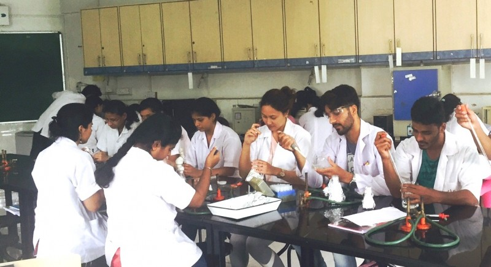

The Faculty of Science at Abeda Inamdar Senior College offers students opportunities to study a wide range of scientific and technological subjects through undergraduate and postgraduate programmes.
The faculty covers areas including Chemistry, Physics, Mathematics, Computer Science, Microbiology, Biotechnology, Botany, Zoology, Electronics, Statistics and Environmental Science.
These programmes help students develop scientific knowledge, analytical thinking, practical skills and a strong foundation for higher studies and careers in science and technology.
• Chemistry
• Physics
• Mathematics
• Computer Science
• Microbiology
• Biotechnology
• Botany
• Zoology
• Electronics
• Statistics
• Environmental Science